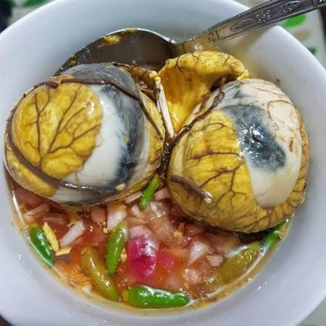

Introduction
The Philippines is known for its diverse and flavorful street food culture. From savory to sweet, the streets are filled with a variety of delicious options that reflect the country’s rich culinary heritage.
Popular Street Foods
- Balut: A fertilized duck egg, often served with a pinch of salt.
- Isaw: Grilled chicken or pork intestines, usually skewered and dipped in vinegar.
- Fish Balls: Round fish-flavored balls fried and served with different sauces.
- Kwek-Kwek: Quail eggs coated in orange batter and deep-fried to a crisp.
- Halo-Halo: A popular shaved ice dessert with various ingredients like fruits, jelly, and sweet beans.



Back
balut
Isaw
Fish ball
kwek-kwek
halo-halo
Why Street Food is Popular
Street food in the Philippines is affordable, convenient, and tasty, making it accessible to everyone. These dishes offer a unique way to experience Filipino culture and are often shared among friends and family.